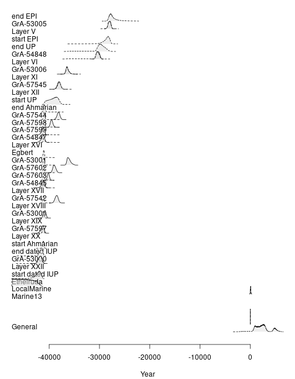

These examples use data available through the fasti package which is available in a separate repository. fasti provides OxCal input models.
## Install the latest version
install.packages("fasti", repos = "https://tesselle.r-universe.dev")
## Load package
library(ananke)
## Download OxCal
oxcal_setup()
#> OxCal successfully downloaded and extracted to /tmp/RtmpPiANjv.
## Read OxCal script from Bosch et al. 2015
path <- system.file("oxcal/ksarakil/ksarakil.oxcal", package = "fasti")
scr <- readLines(path)
## Print script
# cat(scr, sep = "\n")
## Execute OxCal script
## /!\ this may take a while /!\
out <- oxcal_execute(scr)
## Parse OxCal output
res <- oxcal_parse(out)
plot(res)